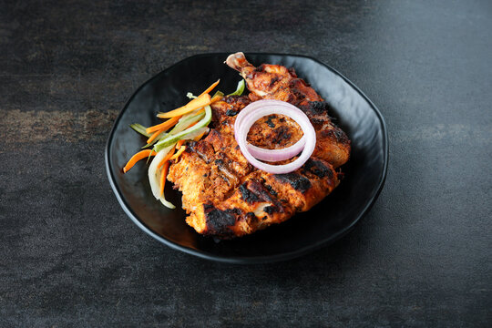

Home
Alfam

Description
Alfam is a popular Arabian-style grilled chicken dish known for its smoky flavor and tender texture. The chicken is marinated in a vibrant blend of yogurt, lemon juice, garlic, ginger, and traditional Arabic spices. It is then slow-grilled over charcoal, which creates a beautifully charred exterior while keeping the meat juicy inside. This flavorful dish is traditionally served hot alongside kubboos flatbread, creamy garlic paste, and fresh salad.
Ingredients
Chicken and Base
- Chicken
- Yogurt
- Lemon juice
- Oil
Aromatics (Grind to Paste)
- Onion
- Tomato
- Garlic
- Ginger
- Green chilies
Spice Powders
- Garam Masala
- Coriander powder
- Cumin powder
- Black pepper powder
- Turmeric powder
- Salt
Steps
- Prep Chicken: Wash 1 kg of large chicken pieces and cut deep slits into the flesh.
- Dry Meat: Pat the chicken pieces completely dry using clean paper towels.
- Blend Aromatics: Grind onion, tomato, garlic, ginger, and green chilies into a smooth, waterless paste.
- Mix Marinade: Whisk the blended paste with yogurt, lemon juice, oil, and all spice powders.
- Apply Spices: Rub the marinade thoroughly over the chicken, forcing it deep into the slits.
- Marinate: Cover the chicken and refrigerate for a minimum of 4 hours to absorb flavors.
- Preheat: Bring the chicken to room temperature and preheat your oven to 400°F (200°C) or fire up charcoal.
- Grill/Bake: Cook the chicken for 35 to 40 minutes, flipping it halfway through the cooking time.
- Char Skin: Broil in the oven for 3 minutes or baste with oil over charcoal for a smoky finish.
- Rest and Serve: Let the meat rest for 5 minutes before serving with hot flatbread and garlic sauce.